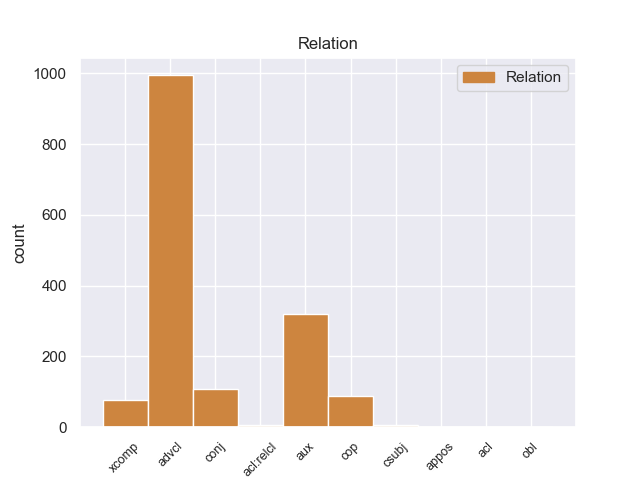
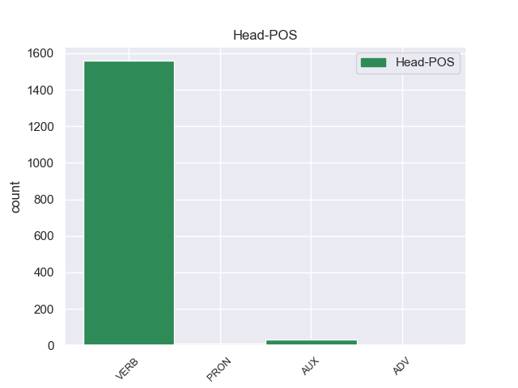
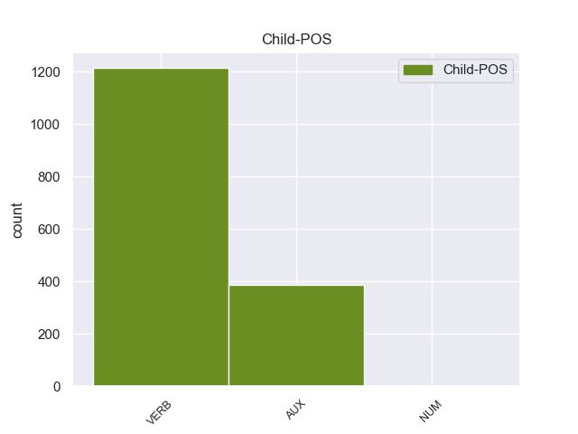

Distribution of features within this leaf



Agreement Rules sorted by frequency.
- When the dependent token is the adverbial clause modifier(advcl) of the head token, and the dependent token is VERB.
1 Ευελπιστώ _ _ _ _ 0 _ _ _
2 ότι _ _ _ _ 0 _ _ _
3 η _ _ _ _ 0 _ _ _
4 απόφαση _ _ _ _ 0 _ _ _
5 αυτή _ _ _ _ 0 _ _ _
6 , _ _ _ _ 0 _ _ _
7 συμπεριλαμβανομένης _ _ _ _ 0 _ _ _
8 και _ _ _ _ 0 _ _ _
9 της _ _ _ _ 0 _ _ _
10 αιτιολογικής _ _ _ _ 0 _ _ _
11 έκθεσης _ _ _ _ 0 _ _ _
12 που _ _ _ _ 0 _ _ _
13 την _ _ _ _ 0 _ _ _
14 συνοδεύει _ _ _ _ 0 _ _ _
15 , _ _ _ _ 0 _ _ _
16 θα _ _ _ _ 0 _ _ _
17 διαβιβαστεί διαβιβαστεί VERB _ Aspect=Imp|Mood=Ind|Number=Sing|Person=3|Tense=Pres|VerbForm=Fin|Voice=Act 0 _ _ _
18 σ _ _ _ _ 0 _ _ _
19 τις _ _ _ _ 0 _ _ _
20 γαλλικές _ _ _ _ 0 _ _ _
21 αρχές _ _ _ _ 0 _ _ _
22 , _ _ _ _ 0 _ _ _
23 εφόσον _ _ _ _ 0 _ _ _
24 υπερψηφιστεί υπερψηφιστεί VERB _ Aspect=Perf|Mood=Ind|Number=Sing|Person=3|VerbForm=Fin|Voice=Act 17 advcl _ _
25 από _ _ _ _ 0 _ _ _
26 το _ _ _ _ 0 _ _ _
27 Κοινοβούλιο _ _ _ _ 0 _ _ _
28 . _ _ _ _ 0 _ _ _
1 από _ _ _ _ 0 _ _ _
2 τα _ _ _ _ 0 _ _ _
3 δε _ _ _ _ 0 _ _ _
4 έγγραφα _ _ _ _ 0 _ _ _
5 της _ _ _ _ 0 _ _ _
6 υπόθεσης _ _ _ _ 0 _ _ _
7 προκύπτει _ _ _ _ 0 _ _ _
8 ότι _ _ _ _ 0 _ _ _
9 δεν _ _ _ _ 0 _ _ _
10 φαίνεται _ _ _ _ 0 _ _ _
11 να _ _ _ _ 0 _ _ _
12 έχει έχει AUX _ Aspect=Imp|Mood=Ind|Number=Sing|Person=3|Tense=Pres|VerbForm=Fin|Voice=Act 13 aux _ _
13 ληφθεί ληφθεί VERB _ Aspect=Imp|Mood=Ind|Number=Sing|Person=3|Tense=Pres|VerbForm=Fin|Voice=Act 0 _ _ _
14 υπόψη _ _ _ _ 0 _ _ _
15 η _ _ _ _ 0 _ _ _
16 σύσταση _ _ _ _ 0 _ _ _
17 να _ _ _ _ 0 _ _ _
18 διαβιβαστεί _ _ _ _ 0 _ _ _
19 η _ _ _ _ 0 _ _ _
20 αίτηση _ _ _ _ 0 _ _ _
21 άρσης _ _ _ _ 0 _ _ _
22 της _ _ _ _ 0 _ _ _
23 ασυλίας _ _ _ _ 0 _ _ _
24 μόνον _ _ _ _ 0 _ _ _
25 επί _ _ _ _ 0 _ _ _
26 τη _ _ _ _ 0 _ _ _
27 βάσει _ _ _ _ 0 _ _ _
28 ακριβέστερου _ _ _ _ 0 _ _ _
29 προσδιορισμού _ _ _ _ 0 _ _ _
30 όσον _ _ _ _ 0 _ _ _
31 αφορά _ _ _ _ 0 _ _ _
32 τους _ _ _ _ 0 _ _ _
33 τόπους _ _ _ _ 0 _ _ _
34 και _ _ _ _ 0 _ _ _
35 τα _ _ _ _ 0 _ _ _
36 πρόσωπα _ _ _ _ 0 _ _ _
37 που _ _ _ _ 0 _ _ _
38 εμπλέκονται _ _ _ _ 0 _ _ _
39 σ _ _ _ _ 0 _ _ _
40 την _ _ _ _ 0 _ _ _
41 υπόθεση _ _ _ _ 0 _ _ _
42 . _ _ _ _ 0 _ _ _
1 Η _ _ _ _ 0 _ _ _
2 Αστυνομία _ _ _ _ 0 _ _ _
3 απέκλεισε _ _ _ _ 0 _ _ _
4 την _ _ _ _ 0 _ _ _
5 πόλη _ _ _ _ 0 _ _ _
6 με _ _ _ _ 0 _ _ _
7 σκοπό _ _ _ _ 0 _ _ _
8 να _ _ _ _ 0 _ _ _
9 βρεί βρεί VERB _ Aspect=Perf|Mood=Ind|Number=Sing|Person=3|VerbForm=Fin|Voice=Act 0 _ _ _
10 τους _ _ _ _ 0 _ _ _
11 κρατούμενους _ _ _ _ 0 _ _ _
12 και _ _ _ _ 0 _ _ _
13 να _ _ _ _ 0 _ _ _
14 τους _ _ _ _ 0 _ _ _
15 ξαναβάλει ξαναβάλει VERB _ Aspect=Perf|Mood=Ind|Number=Sing|Person=3|VerbForm=Fin|Voice=Act 9 conj _ _
16 σ _ _ _ _ 0 _ _ _
17 τη _ _ _ _ 0 _ _ _
18 φυλακή _ _ _ _ 0 _ _ _
19 » _ _ _ _ 0 _ _ _
20 , _ _ _ _ 0 _ _ _
21 δήλωσε _ _ _ _ 0 _ _ _
22 εκπρόσωπος _ _ _ _ 0 _ _ _
23 των _ _ _ _ 0 _ _ _
24 τοπικών _ _ _ _ 0 _ _ _
25 αρχών _ _ _ _ 0 _ _ _
26 . _ _ _ _ 0 _ _ _
1 Αφενός _ _ _ _ 0 _ _ _
2 , _ _ _ _ 0 _ _ _
3 σ _ _ _ _ 0 _ _ _
4 την _ _ _ _ 0 _ _ _
5 αίτηση _ _ _ _ 0 _ _ _
6 λήψης _ _ _ _ 0 _ _ _
7 μέτρων _ _ _ _ 0 _ _ _
8 δικαστικής _ _ _ _ 0 _ _ _
9 επιτήρησης _ _ _ _ 0 _ _ _
10 δεν _ _ _ _ 0 _ _ _
11 διευκρινίζονται _ _ _ _ 0 _ _ _
12 οι _ _ _ _ 0 _ _ _
13 χώρες _ _ _ _ 0 _ _ _
14 τις _ _ _ _ 0 _ _ _
15 οποίες _ _ _ _ 0 _ _ _
16 θα _ _ _ _ 0 _ _ _
17 απαγορευθεί _ _ _ _ 0 _ _ _
18 να _ _ _ _ 0 _ _ _
19 επισκεφθούν _ _ _ _ 0 _ _ _
20 οι _ _ _ _ 0 _ _ _
21 κατηγορούμενοι _ _ _ _ 0 _ _ _
22 και _ _ _ _ 0 _ _ _
23 αφετέρου _ _ _ _ 0 _ _ _
24 , _ _ _ _ 0 _ _ _
25 ύστερα _ _ _ _ 0 _ _ _
26 από _ _ _ _ 0 _ _ _
27 απόφαση _ _ _ _ 0 _ _ _
28 του _ _ _ _ 0 _ _ _
29 Ακυρωτικού _ _ _ _ 0 _ _ _
30 Δικαστηρίου _ _ _ _ 0 _ _ _
31 , _ _ _ _ 0 _ _ _
32 το _ _ _ _ 0 _ _ _
33 εύρος _ _ _ _ 0 _ _ _
34 της _ _ _ _ 0 _ _ _
35 διαδικασίας _ _ _ _ 0 _ _ _
36 μένει μένει VERB _ Aspect=Imp|Mood=Ind|Number=Sing|Person=3|Tense=Pres|VerbForm=Fin|Voice=Act 0 _ _ _
37 να _ _ _ _ 0 _ _ _
38 προσδιοριστεί προσδιοριστεί VERB _ Aspect=Perf|Mood=Ind|Number=Sing|Person=3|VerbForm=Fin|Voice=Act 36 xcomp _ _
39 με _ _ _ _ 0 _ _ _
40 απόφαση _ _ _ _ 0 _ _ _
41 του _ _ _ _ 0 _ _ _
42 Εφετείου _ _ _ _ 0 _ _ _
43 . _ _ _ _ 0 _ _ _
1 Είναι είμαι AUX _ Aspect=Imp|Mood=Ind|Number=Sing|Person=3|Tense=Pres|VerbForm=Fin|Voice=Pass 2 cop _ _
2 σημαντικό σημαντικό AUX _ Aspect=Imp|Mood=Ind|Number=Sing|Person=3|Tense=Pres|VerbForm=Fin|Voice=Act 0 _ _ _
3 να _ _ _ _ 0 _ _ _
4 υπογραμμίσω _ _ _ _ 0 _ _ _
5 το _ _ _ _ 0 _ _ _
6 γεγονός _ _ _ _ 0 _ _ _
7 ότι _ _ _ _ 0 _ _ _
8 και _ _ _ _ 0 _ _ _
9 οι _ _ _ _ 0 _ _ _
10 δύο _ _ _ _ 0 _ _ _
11 βουλευτές _ _ _ _ 0 _ _ _
12 διατρανώνουν _ _ _ _ 0 _ _ _
13 σθεναρά _ _ _ _ 0 _ _ _
14 την _ _ _ _ 0 _ _ _
15 αθωότητά _ _ _ _ 0 _ _ _
16 τους _ _ _ _ 0 _ _ _
17 και _ _ _ _ 0 _ _ _
18 καταγγέλλουν _ _ _ _ 0 _ _ _
19 αυτό _ _ _ _ 0 _ _ _
20 που _ _ _ _ 0 _ _ _
21 οι _ _ _ _ 0 _ _ _
22 ίδιοι _ _ _ _ 0 _ _ _
23 θεωρούν _ _ _ _ 0 _ _ _
24 καταχρήσεις _ _ _ _ 0 _ _ _
25 σ _ _ _ _ 0 _ _ _
26 τη _ _ _ _ 0 _ _ _
27 διαδικασία _ _ _ _ 0 _ _ _
28 δίωξης _ _ _ _ 0 _ _ _
29 . _ _ _ _ 0 _ _ _
1 Την _ _ _ _ 0 _ _ _
2 μεθεπομένη _ _ _ _ 0 _ _ _
3 σχημάτισε _ _ _ _ 0 _ _ _
4 κυβέρνηση _ _ _ _ 0 _ _ _
5 ο _ _ _ _ 0 _ _ _
6 Δημήτριος _ _ _ _ 0 _ _ _
7 Ράλλης _ _ _ _ 0 _ _ _
8 , _ _ _ _ 0 _ _ _
9 παραιτήθηκε παραιτήθηκε VERB _ Aspect=Perf|Mood=Ind|Number=Sing|Person=3|Tense=Past|VerbForm=Fin|Voice=Act 0 _ _ _
10 ο _ _ _ _ 0 _ _ _
11 Κουντουριώτης _ _ _ _ 0 _ _ _
12 κι _ _ _ _ 0 _ _ _
13 έγινε έγινε VERB _ Aspect=Imp|Mood=Ind|Number=Sing|Person=3|Tense=Pres|VerbForm=Fin|Voice=Pass 9 cop _ _
14 αντιβασίλισσα _ _ _ _ 0 _ _ _
15 η _ _ _ _ 0 _ _ _
16 βασιλομήτωρ _ _ _ _ 0 _ _ _
17 Όλγα _ _ _ _ 0 _ _ _
18 μέχρι _ _ _ _ 0 _ _ _
19 να _ _ _ _ 0 _ _ _
20 γίνει _ _ _ _ 0 _ _ _
21 δημοψήφισμα _ _ _ _ 0 _ _ _
22 , _ _ _ _ 0 _ _ _
23 το _ _ _ _ 0 _ _ _
24 οποίο _ _ _ _ 0 _ _ _
25 θα _ _ _ _ 0 _ _ _
26 επανέφερε _ _ _ _ 0 _ _ _
27 τον _ _ _ _ 0 _ _ _
28 εξόριστο _ _ _ _ 0 _ _ _
29 Κωνσταντίνο _ _ _ _ 0 _ _ _
30 . _ _ _ _ 0 _ _ _
1 Σε _ _ _ _ 0 _ _ _
2 ένα _ _ _ _ 0 _ _ _
3 τέμενος _ _ _ _ 0 _ _ _
4 της _ _ _ _ 0 _ _ _
5 περιοχής _ _ _ _ 0 _ _ _
6 πιστοί _ _ _ _ 0 _ _ _
7 προσεύχονται _ _ _ _ 0 _ _ _
8 , _ _ _ _ 0 _ _ _
9 ελπίζοντας _ _ _ _ 0 _ _ _
10 ότι _ _ _ _ 0 _ _ _
11 θα _ _ _ _ 0 _ _ _
12 καταφέρουν _ _ _ _ 0 _ _ _
13 να _ _ _ _ 0 _ _ _
14 παραμείνουν _ _ _ _ 0 _ _ _
15 σ _ _ _ _ 0 _ _ _
16 την _ _ _ _ 0 _ _ _
17 πατρίδα _ _ _ _ 0 _ _ _
18 τους _ _ _ _ 0 _ _ _
19 με _ _ _ _ 0 _ _ _
20 " _ _ _ _ 0 _ _ _
21 το _ _ _ _ 0 _ _ _
22 γαλάζιο _ _ _ _ 0 _ _ _
23 ουρανό _ _ _ _ 0 _ _ _
24 και _ _ _ _ 0 _ _ _
25 τα _ _ _ _ 0 _ _ _
26 μπλε _ _ _ _ 0 _ _ _
27 κύματα _ _ _ _ 0 _ _ _
28 " _ _ _ _ 0 _ _ _
29 , _ _ _ _ 0 _ _ _
30 όπως _ _ _ _ 0 _ _ _
31 είχε έχω VERB _ Aspect=Imp|Mood=Ind|Number=Sing|Person=3|Tense=Past|VerbForm=Fin|Voice=Act 32 aux _ _
32 πει πει VERB _ Aspect=Imp|Mood=Ind|Number=Plur|Person=3|Tense=Pres|VerbForm=Fin|Voice=Act 0 _ _ _
33 ο _ _ _ _ 0 _ _ _
34 Πούσκιν _ _ _ _ 0 _ _ _
35 . _ _ _ _ 0 _ _ _
1 Είναι _ _ _ _ 0 _ _ _
2 κάτι κάτι PRON _ Case=Acc|Gender=Neut|Number=Sing|Person=3|PronType=Dem 0 _ _ _
3 σ _ _ _ _ 0 _ _ _
4 το _ _ _ _ 0 _ _ _
5 οποίο _ _ _ _ 0 _ _ _
6 πρέπει _ _ _ _ 0 _ _ _
7 να _ _ _ _ 0 _ _ _
8 δώσουμε δώσουμε VERB _ Aspect=Imp|Mood=Ind|Number=Sing|Person=3|Tense=Pres|VerbForm=Fin|Voice=Act 2 acl:relcl _ _
9 μεγάλη _ _ _ _ 0 _ _ _
10 προσοχή _ _ _ _ 0 _ _ _
11 . _ _ _ _ 0 _ _ _
1 Συνεπώς _ _ _ _ 0 _ _ _
2 , _ _ _ _ 0 _ _ _
3 είναι _ _ _ _ 0 _ _ _
4 σημαντικό σημαντικό AUX _ Aspect=Imp|Mood=Ind|Number=Sing|Person=3|Tense=Pres|VerbForm=Fin|Voice=Act 0 _ _ _
5 να _ _ _ _ 0 _ _ _
6 εξετάσουμε _ _ _ _ 0 _ _ _
7 το _ _ _ _ 0 _ _ _
8 θέμα _ _ _ _ 0 _ _ _
9 τώρα _ _ _ _ 0 _ _ _
10 και _ _ _ _ 0 _ _ _
11 να _ _ _ _ 0 _ _ _
12 μην _ _ _ _ 0 _ _ _
13 σκεφτόμαστε σκεφτόμαστε VERB _ Aspect=Imp|Mood=Ind|Number=Sing|Person=3|Tense=Pres|VerbForm=Fin|Voice=Act 4 csubj _ _
14 ότι _ _ _ _ 0 _ _ _
15 η _ _ _ _ 0 _ _ _
16 έκθεση _ _ _ _ 0 _ _ _
17 von _ _ _ _ 0 _ _ _
18 Wogau _ _ _ _ 0 _ _ _
19 αποτελεί _ _ _ _ 0 _ _ _
20 μια _ _ _ _ 0 _ _ _
21 πεντάμηνη _ _ _ _ 0 _ _ _
22 - _ _ _ _ 0 _ _ _
23 ή _ _ _ _ 0 _ _ _
24 έστω _ _ _ _ 0 _ _ _
25 εξάμηνη _ _ _ _ 0 _ _ _
26 - _ _ _ _ 0 _ _ _
27 λύση _ _ _ _ 0 _ _ _
28 . _ _ _ _ 0 _ _ _
1 πρόκειται _ _ _ _ 0 _ _ _
2 για _ _ _ _ 0 _ _ _
3 αυτό αυτός PRON PRON Case=Acc|Gender=Neut|Number=Sing|Person=3|PronType=Dem 0 _ _ _
4 το _ _ _ _ 0 _ _ _
5 οποίο _ _ _ _ 0 _ _ _
6 αποκαλύφθηκε _ _ _ _ 0 _ _ _
7 κατά _ _ _ _ 0 _ _ _
8 τη _ _ _ _ 0 _ _ _
9 διάρκεια _ _ _ _ 0 _ _ _
10 αυτής _ _ _ _ 0 _ _ _
11 της _ _ _ _ 0 _ _ _
12 διαδικασίας _ _ _ _ 0 _ _ _
13 , _ _ _ _ 0 _ _ _
14 ότι _ _ _ _ 0 _ _ _
15 ο _ _ _ _ 0 _ _ _
16 Εισαγγελέας _ _ _ _ 0 _ _ _
17 κάποια _ _ _ _ 0 _ _ _
18 στιγμή _ _ _ _ 0 _ _ _
19 ζήτησε ζητώ VERB VERB Aspect=Perf|Mood=Ind|Number=Sing|Person=3|Tense=Past|VerbForm=Fin|Voice=Act 3 appos _ _
20 από _ _ _ _ 0 _ _ _
21 την _ _ _ _ 0 _ _ _
22 Πρόεδρο _ _ _ _ 0 _ _ _
23 του _ _ _ _ 0 _ _ _
24 Σώματος _ _ _ _ 0 _ _ _
25 , _ _ _ _ 0 _ _ _
26 την _ _ _ _ 0 _ _ _
27 προκάτοχό _ _ _ _ 0 _ _ _
28 σας _ _ _ _ 0 _ _ _
29 , _ _ _ _ 0 _ _ _
30 λεπτομέρειες _ _ _ _ 0 _ _ _
31 για _ _ _ _ 0 _ _ _
32 την _ _ _ _ 0 _ _ _
33 ψήφο _ _ _ _ 0 _ _ _
34 που _ _ _ _ 0 _ _ _
35 έχουν _ _ _ _ 0 _ _ _
36 δώσει _ _ _ _ 0 _ _ _
37 οι _ _ _ _ 0 _ _ _
38 δύο _ _ _ _ 0 _ _ _
39 συγκεκριμένοι _ _ _ _ 0 _ _ _
40 βουλευτές _ _ _ _ 0 _ _ _
41 προκειμένου _ _ _ _ 0 _ _ _
42 να _ _ _ _ 0 _ _ _
43 διευκρινιστεί _ _ _ _ 0 _ _ _
44 περαιτέρω _ _ _ _ 0 _ _ _
45 η _ _ _ _ 0 _ _ _
46 πιθανότητα _ _ _ _ 0 _ _ _
47 να _ _ _ _ 0 _ _ _
48 είχαν _ _ _ _ 0 _ _ _
49 ασκήσει _ _ _ _ 0 _ _ _
50 αθέμιτη _ _ _ _ 0 _ _ _
51 επιρροή _ _ _ _ 0 _ _ _
52 . _ _ _ _ 0 _ _ _
1 Σ _ _ _ _ 0 _ _ _
2 το _ _ _ _ 0 _ _ _
3 δεύτερο δεύτερος NUM _ Case=Acc|Gender=Neut|Number=Sing|Person=3|PronType=Dem 7 obl _ _
4 , _ _ _ _ 0 _ _ _
5 οι _ _ _ _ 0 _ _ _
6 Ρώσοι _ _ _ _ 0 _ _ _
7 προσπάθησαν προσπάθησαν VERB _ Aspect=Perf|Mood=Ind|Number=Plur|Person=3|Tense=Past|VerbForm=Fin|Voice=Act 0 _ _ _
8 να _ _ _ _ 0 _ _ _
9 ισοφαρίσουν _ _ _ _ 0 _ _ _
10 , _ _ _ _ 0 _ _ _
11 αλλά _ _ _ _ 0 _ _ _
12 ένα _ _ _ _ 0 _ _ _
13 λεπτό _ _ _ _ 0 _ _ _
14 πριν _ _ _ _ 0 _ _ _
15 τη _ _ _ _ 0 _ _ _
16 λήξη _ _ _ _ 0 _ _ _
17 ο _ _ _ _ 0 _ _ _
18 Ολιβέιρα _ _ _ _ 0 _ _ _
19 σκόραρε _ _ _ _ 0 _ _ _
20 το _ _ _ _ 0 _ _ _
21 δεύτερο _ _ _ _ 0 _ _ _
22 γκολ _ _ _ _ 0 _ _ _
23 των _ _ _ _ 0 _ _ _
24 Πορτογάλων _ _ _ _ 0 _ _ _
25 . _ _ _ _ 0 _ _ _
Disagree Examples:
1 Σε _ _ _ _ 0 _ _ _
2 τελική _ _ _ _ 0 _ _ _
3 ανάλυση _ _ _ _ 0 _ _ _
4 , _ _ _ _ 0 _ _ _
5 σ _ _ _ _ 0 _ _ _
6 το _ _ _ _ 0 _ _ _
7 παράδειγμα _ _ _ _ 0 _ _ _
8 του _ _ _ _ 0 _ _ _
9 Λουξεμβούργου _ _ _ _ 0 _ _ _
10 είναι _ _ _ _ 0 _ _ _
11 και _ _ _ _ 0 _ _ _
12 οι _ _ _ _ 0 _ _ _
13 δύο _ _ _ _ 0 _ _ _
14 χαμένοι _ _ _ _ 0 _ _ _
15 , _ _ _ _ 0 _ _ _
16 κάτι κάτι PRON PRON Case=Acc|Gender=Neut|Number=Sing|Person=3|PronType=Ind 0 _ _ _
17 που _ _ _ _ 0 _ _ _
18 επισημάναμε επισημαίνω VERB VERB Aspect=Imp|Mood=Ind|Number=Plur|Person=1|Tense=Past|VerbForm=Fin|Voice=Act 16 acl:relcl _ _
19 ακόμα _ _ _ _ 0 _ _ _
20 μια _ _ _ _ 0 _ _ _
21 φορά _ _ _ _ 0 _ _ _
22 σ _ _ _ _ 0 _ _ _
23 την _ _ _ _ 0 _ _ _
24 Επιτροπή _ _ _ _ 0 _ _ _
25 με _ _ _ _ 0 _ _ _
26 την _ _ _ _ 0 _ _ _
27 περιβόητη _ _ _ _ 0 _ _ _
28 έκθεση _ _ _ _ 0 _ _ _
29 van _ _ _ _ 0 _ _ _
30 Dam _ _ _ _ 0 _ _ _
31 . _ _ _ _ 0 _ _ _
1 Ευχαριστώ _ _ _ _ 0 _ _ _
2 όλους _ _ _ _ 0 _ _ _
3 τους _ _ _ _ 0 _ _ _
4 εισηγητές _ _ _ _ 0 _ _ _
5 για _ _ _ _ 0 _ _ _
6 το _ _ _ _ 0 _ _ _
7 έργο _ _ _ _ 0 _ _ _
8 τους _ _ _ _ 0 _ _ _
9 και _ _ _ _ 0 _ _ _
10 τους _ _ _ _ 0 _ _ _
11 συγχαίρω συγχαίρω VERB VERB Aspect=Imp|Mood=Ind|Number=Sing|Person=1|Tense=Pres|VerbForm=Fin|Voice=Act 0 _ _ _
12 διότι _ _ _ _ 0 _ _ _
13 συνέταξαν συντάσσω VERB VERB Aspect=Perf|Mood=Ind|Number=Plur|Person=3|Tense=Past|VerbForm=Fin|Voice=Act 11 advcl _ _
14 τρεις _ _ _ _ 0 _ _ _
15 εξαιρετικά _ _ _ _ 0 _ _ _
16 ισόρροπες _ _ _ _ 0 _ _ _
17 εκθέσεις _ _ _ _ 0 _ _ _
18 . _ _ _ _ 0 _ _ _
1 Το _ _ _ _ 0 _ _ _
2 ευρώ _ _ _ _ 0 _ _ _
3 είναι _ _ _ _ 0 _ _ _
4 επίσης _ _ _ _ 0 _ _ _
5 επιτυχία _ _ _ _ 0 _ _ _
6 της _ _ _ _ 0 _ _ _
7 Ευρωπαϊκής _ _ _ _ 0 _ _ _
8 Κεντρικής _ _ _ _ 0 _ _ _
9 Τράπεζας _ _ _ _ 0 _ _ _
10 , _ _ _ _ 0 _ _ _
11 των _ _ _ _ 0 _ _ _
12 χρηματοπιστωτικών _ _ _ _ 0 _ _ _
13 ιδρυμάτων _ _ _ _ 0 _ _ _
14 , _ _ _ _ 0 _ _ _
15 των _ _ _ _ 0 _ _ _
16 εκατοντάδων _ _ _ _ 0 _ _ _
17 χιλιάδων _ _ _ _ 0 _ _ _
18 ανώνυμων _ _ _ _ 0 _ _ _
19 πολιτών _ _ _ _ 0 _ _ _
20 που _ _ _ _ 0 _ _ _
21 δούλεψαν _ _ _ _ 0 _ _ _
22 την _ _ _ _ 0 _ _ _
23 πρώτη _ _ _ _ 0 _ _ _
24 Ιανουαρίου _ _ _ _ 0 _ _ _
25 , _ _ _ _ 0 _ _ _
26 και _ _ _ _ 0 _ _ _
27 επιτυχία _ _ _ _ 0 _ _ _
28 επίσης _ _ _ _ 0 _ _ _
29 , _ _ _ _ 0 _ _ _
30 πρέπει πρέπει AUX AUX Aspect=Imp|Mood=Ind|Number=Sing|Person=3|Tense=Pres|VerbForm=Fin|Voice=Act 33 aux _ _
31 να _ _ _ _ 0 _ _ _
32 το _ _ _ _ 0 _ _ _
33 αναγνωρίσουμε αναγνωρίζω VERB VERB Aspect=Perf|Mood=Ind|Number=Plur|Person=1|VerbForm=Fin|Voice=Act 0 _ _ _
34 , _ _ _ _ 0 _ _ _
35 του _ _ _ _ 0 _ _ _
36 Pierre _ _ _ _ 0 _ _ _
37 Werner _ _ _ _ 0 _ _ _
38 , _ _ _ _ 0 _ _ _
39 του _ _ _ _ 0 _ _ _
40 Valéry _ _ _ _ 0 _ _ _
41 Giscard _ _ _ _ 0 _ _ _
42 d' _ _ _ _ 0 _ _ _
43 Estaing _ _ _ _ 0 _ _ _
44 , _ _ _ _ 0 _ _ _
45 του _ _ _ _ 0 _ _ _
46 Helmut _ _ _ _ 0 _ _ _
47 Schmidt _ _ _ _ 0 _ _ _
48 , _ _ _ _ 0 _ _ _
49 του _ _ _ _ 0 _ _ _
50 François _ _ _ _ 0 _ _ _
51 Mitterrand _ _ _ _ 0 _ _ _
52 , _ _ _ _ 0 _ _ _
53 του _ _ _ _ 0 _ _ _
54 Helmut _ _ _ _ 0 _ _ _
55 Kohl _ _ _ _ 0 _ _ _
56 , _ _ _ _ 0 _ _ _
57 του _ _ _ _ 0 _ _ _
58 Ruud _ _ _ _ 0 _ _ _
59 Lubbers _ _ _ _ 0 _ _ _
60 , _ _ _ _ 0 _ _ _
61 του _ _ _ _ 0 _ _ _
62 Giulio _ _ _ _ 0 _ _ _
63 Andreotti _ _ _ _ 0 _ _ _
64 , _ _ _ _ 0 _ _ _
65 του _ _ _ _ 0 _ _ _
66 John _ _ _ _ 0 _ _ _
67 Major _ _ _ _ 0 _ _ _
68 , _ _ _ _ 0 _ _ _
69 του _ _ _ _ 0 _ _ _
70 Felipe _ _ _ _ 0 _ _ _
71 Gonzαlez _ _ _ _ 0 _ _ _
72 και _ _ _ _ 0 _ _ _
73 επίσης _ _ _ _ 0 _ _ _
74 του _ _ _ _ 0 _ _ _
75 Jacques _ _ _ _ 0 _ _ _
76 Santer _ _ _ _ 0 _ _ _
77 , _ _ _ _ 0 _ _ _
78 ως _ _ _ _ 0 _ _ _
79 Προέδρου _ _ _ _ 0 _ _ _
80 της _ _ _ _ 0 _ _ _
81 Επιτροπής _ _ _ _ 0 _ _ _
82 . _ _ _ _ 0 _ _ _
1 Η _ _ _ _ 0 _ _ _
2 πρόκληση _ _ _ _ 0 _ _ _
3 τώρα _ _ _ _ 0 _ _ _
4 είναι είμαι AUX AUX Aspect=Imp|Mood=Ind|Number=Sing|Person=3|Tense=Pres|VerbForm=Fin|Voice=Pass 6 cop _ _
5 να _ _ _ _ 0 _ _ _
6 δημιουργήσουμε δημιουργώ VERB VERB Aspect=Perf|Mood=Ind|Number=Plur|Person=1|VerbForm=Fin|Voice=Act 0 _ _ _
7 μία _ _ _ _ 0 _ _ _
8 Οικονομική _ _ _ _ 0 _ _ _
9 Ένωση _ _ _ _ 0 _ _ _
10 η _ _ _ _ 0 _ _ _
11 οποία _ _ _ _ 0 _ _ _
12 θα _ _ _ _ 0 _ _ _
13 ανταποκρίνεται _ _ _ _ 0 _ _ _
14 σ _ _ _ _ 0 _ _ _
15 την _ _ _ _ 0 _ _ _
16 Νομισματική _ _ _ _ 0 _ _ _
17 Ένωση _ _ _ _ 0 _ _ _
18 - _ _ _ _ 0 _ _ _
19 όπως _ _ _ _ 0 _ _ _
20 επεσήμανε _ _ _ _ 0 _ _ _
21 ο _ _ _ _ 0 _ _ _
22 Πρόεδρος _ _ _ _ 0 _ _ _
23 της _ _ _ _ 0 _ _ _
24 Επιτροπής _ _ _ _ 0 _ _ _
25 - _ _ _ _ 0 _ _ _
26 και _ _ _ _ 0 _ _ _
27 επίσης _ _ _ _ 0 _ _ _
28 να _ _ _ _ 0 _ _ _
29 αναπτύξουμε _ _ _ _ 0 _ _ _
30 την _ _ _ _ 0 _ _ _
31 στρατηγική _ _ _ _ 0 _ _ _
32 της _ _ _ _ 0 _ _ _
33 Λισαβόνας _ _ _ _ 0 _ _ _
34 , _ _ _ _ 0 _ _ _
35 η _ _ _ _ 0 _ _ _
36 οποία _ _ _ _ 0 _ _ _
37 κατά _ _ _ _ 0 _ _ _
38 τη _ _ _ _ 0 _ _ _
39 γνώμη _ _ _ _ 0 _ _ _
40 μας _ _ _ _ 0 _ _ _
41 είναι _ _ _ _ 0 _ _ _
42 αειφόρος _ _ _ _ 0 _ _ _
43 ανάπτυξη _ _ _ _ 0 _ _ _
44 , _ _ _ _ 0 _ _ _
45 περισσότερη _ _ _ _ 0 _ _ _
46 κοινωνική _ _ _ _ 0 _ _ _
47 συνοχή _ _ _ _ 0 _ _ _
48 , _ _ _ _ 0 _ _ _
49 περισσότερη _ _ _ _ 0 _ _ _
50 πλήρης _ _ _ _ 0 _ _ _
51 απασχόληση _ _ _ _ 0 _ _ _
52 , _ _ _ _ 0 _ _ _
53 περισσότερος _ _ _ _ 0 _ _ _
54 ανταγωνισμός _ _ _ _ 0 _ _ _
55 . _ _ _ _ 0 _ _ _
1 Όσον _ _ _ _ 0 _ _ _
2 αφορά _ _ _ _ 0 _ _ _
3 τη _ _ _ _ 0 _ _ _
4 διεύρυνση _ _ _ _ 0 _ _ _
5 , _ _ _ _ 0 _ _ _
6 από _ _ _ _ 0 _ _ _
7 εσάς _ _ _ _ 0 _ _ _
8 εξαρτάται εξαρτώ VERB VERB Aspect=Imp|Mood=Ind|Number=Sing|Person=3|Tense=Pres|VerbForm=Fin|Voice=Pass 0 _ _ _
9 να _ _ _ _ 0 _ _ _
10 ωριμάσετε ωριμάζω VERB VERB Aspect=Perf|Mood=Ind|Number=Plur|Person=2|VerbForm=Fin|Voice=Act 8 csubj _ _
11 και _ _ _ _ 0 _ _ _
12 να _ _ _ _ 0 _ _ _
13 προχωρήσετε _ _ _ _ 0 _ _ _
14 σε _ _ _ _ 0 _ _ _
15 κάτι _ _ _ _ 0 _ _ _
16 που _ _ _ _ 0 _ _ _
17 δεν _ _ _ _ 0 _ _ _
18 θα _ _ _ _ 0 _ _ _
19 μπορέσετε _ _ _ _ 0 _ _ _
20 να _ _ _ _ 0 _ _ _
21 θερίσετε _ _ _ _ 0 _ _ _
22 , _ _ _ _ 0 _ _ _
23 αλλά _ _ _ _ 0 _ _ _
24 πρέπει _ _ _ _ 0 _ _ _
25 να _ _ _ _ 0 _ _ _
26 το _ _ _ _ 0 _ _ _
27 κάνετε _ _ _ _ 0 _ _ _
28 και _ _ _ _ 0 _ _ _
29 ελπίζω _ _ _ _ 0 _ _ _
30 να _ _ _ _ 0 _ _ _
31 το _ _ _ _ 0 _ _ _
32 αναλάβετε _ _ _ _ 0 _ _ _
33 με _ _ _ _ 0 _ _ _
34 υπευθυνότητα _ _ _ _ 0 _ _ _
35 . _ _ _ _ 0 _ _ _